Mondstadt
Arconte - Venti
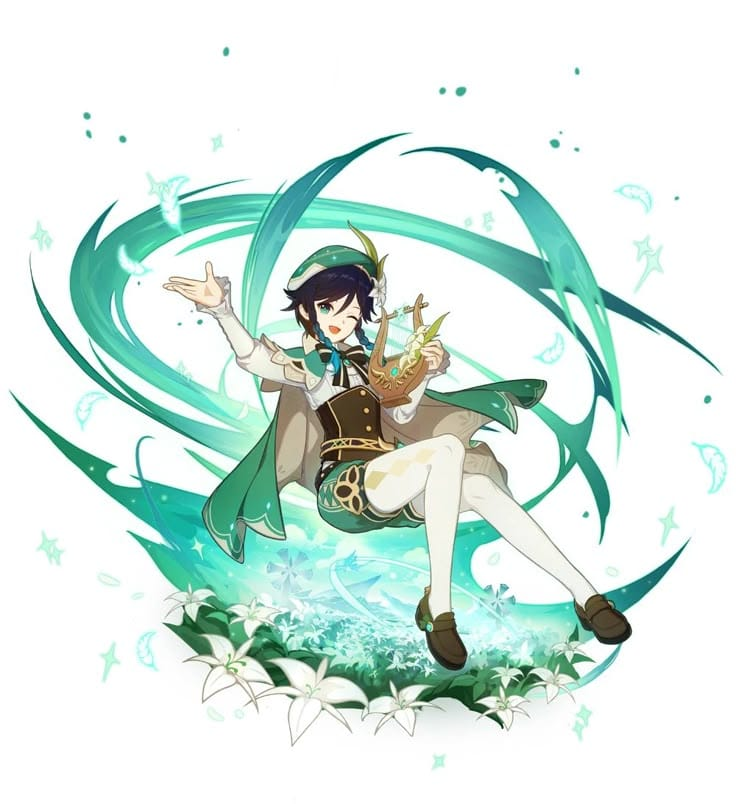
Ele é um bardo de espírito livre e amante do vinho de Mondstadt, o que contradiz sua identidade como Barbatos, o Arconte Anemo.
Às vezes, canta poemas antigos e outras vezes canta canções novas que ninguém nunca ouviu falar.
Raridade:★★★★★ Elemento:Anemo Arma:Espada
Amber
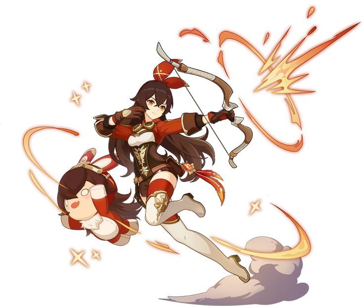
Como a única Outrider remanescente dos Cavaleiros de Favonius , ela está sempre pronta para ajudar os cidadãos de Mondstadt — seja em algo simples ou em uma tarefa mais desafiadora.
Raridade:★★★★ Elemento:Pyro Arma:Arco
Kaeya
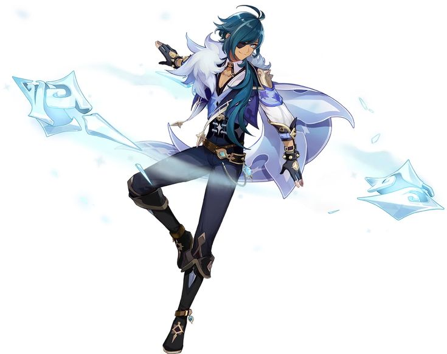
Kaeya é o Capitão da Cavalaria dos Cavaleiros de Favonius . Ele é muito respeitado pelo povo de Mondstadt — mesmo com todas as suas excentricidades e segredos.
Raridade:★★★★ Elemento:Cryo Arma:Espada
Jean
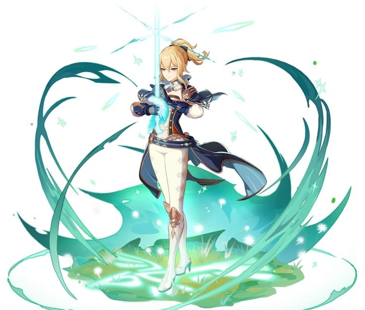
Irmã mais velha de Barbara e descendente do prestigiado Clã Gunnhildr , Jean é a Grã-Mestra interina dos Cavaleiros de Favonius. Ela está sempre ocupada lidando com a agitação em Mondstadt e trabalhando incansavelmente para manter a Cidade da Liberdade.
Raridade:★★★★★ Elemento:Anemo Arma:Espada
Barbara
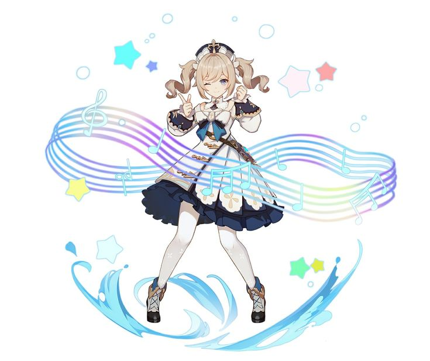
Ela é a diaconisa da Igreja de Favonius e um "ídolo" proeminente, após ter aprendido sobre ela com a intrépida aventureira Alice. Ela também é a irmã mais nova do Grão-Mestre Interino Jean.
Raridade:★★★★ Elemento:Hydro Arma:Catalisador
Lisa
Lisa, uma poderosa maga reconhecida como a graduada mais distinta da Academia Sumeru em 200 anos, retornou a Mondstadt para se tornar a humilde Bibliotecária dos Cavaleiros de Favonius.
Raridade:★★★★ Elemento:Electro Arma:Catalisador
Diluc
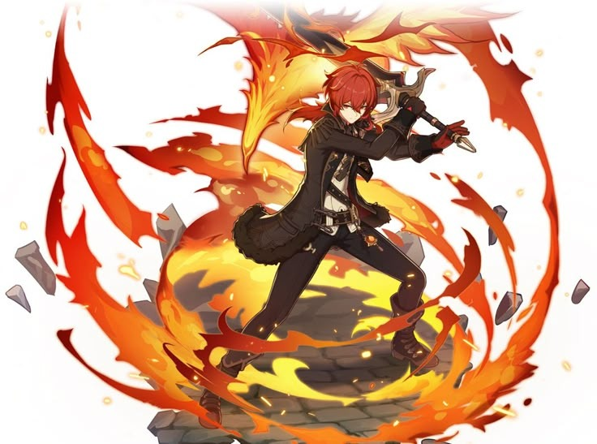
Nascido no abastado Clã Ragnvindr , Diluc é o atual proprietário da Vinícola Aurora e um nobre de grande prestígio em Mondstadt . Embora um incidente passado o tenha levado a romper com os Cavaleiros de Favonius , ele continua a proteger Mondstadt à sua maneira.
Raridade:★★★★★ Elemento:Pyro Arma:Espadão
Razor
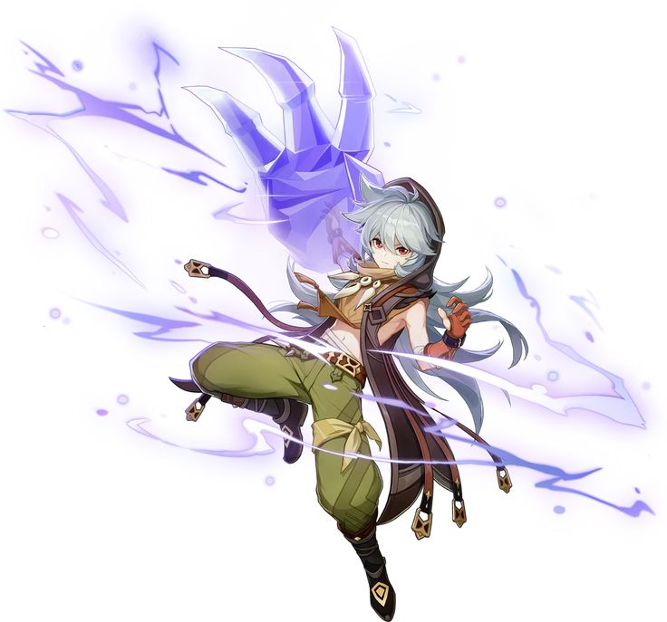
Abandonado ainda bebê, Razor foi acolhido pelo Lobo do Norte de Boreas e criado por sua alcateia em Wolvendom . Após um encontro fortuito com Varka , o atual Grão-Mestre dos Cavaleiros de Favonius , ele começou lentamente a se reintegrar aos humanos com a ajuda de sua mestra Lisa.
Raridade:★★★★ Elemento:Electro Arma:Espadão
Klee
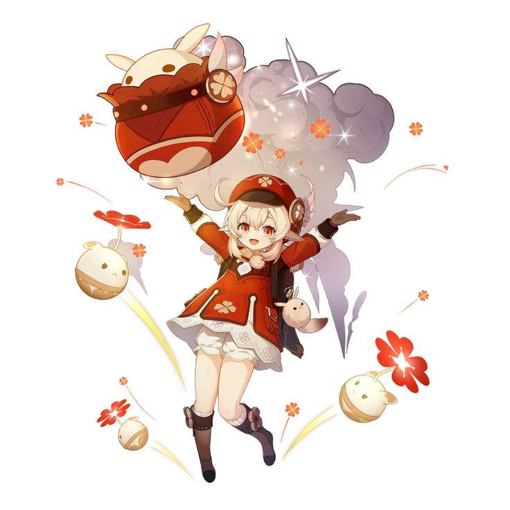
Filha da intrépida e muitas vezes bastante destrutiva aventureira Alice, Klee puxou muito à mãe em vários aspectos, para grande desgosto dos Cavaleiros de Favonius a quem foi confiada.
Raridade:★★★★★ Elemento:Pyro Arma:Catalisador
Bennet
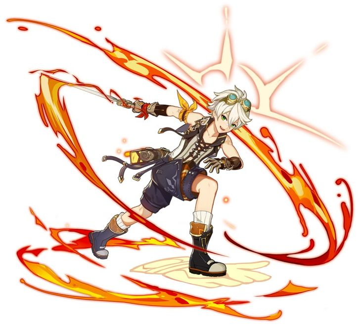
Órfão, descoberto por um aventureiro idoso em Mare Jivari quando bebê, Bennett foi criado longe de sua nação natal, Natlan, na Guilda dos Aventureiros de Mondstadt. Ele é o único membro da "Equipe de Aventuras do Benny", já que todos os outros abandonaram o grupo após vivenciarem o constante infortúnio que o persegue.
Raridade:★★★★ Elemento:Pyro Arma:Espada
Noelle
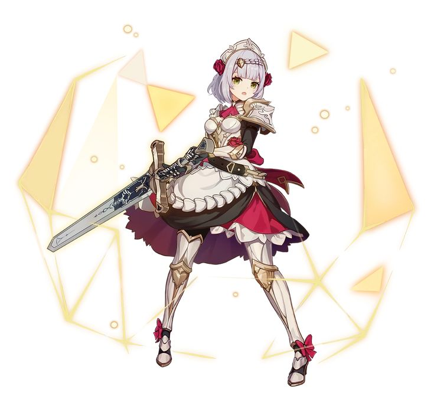
Extremamente forte e confiável, Noelle é considerada "a criada de todas as criadas" entre os Cavaleiros de Favonius , sendo que muitos acreditam que ela tem a capacidade de estar em todos os lugares ao mesmo tempo. Ela é teimosa, no entanto, e disposta a colocar sua vida em risco desnecessariamente a qualquer momento para ajudar alguém. Ela tentou muitas vezes se juntar às fileiras dos Cavaleiros de Favonius para realizar seu sonho de se tornar uma cavaleira de pleno direito, mas falhou em todas as tentativas até agora.
Raridade:★★★★ Elemento:Geo Arma:Espadão
Fischl
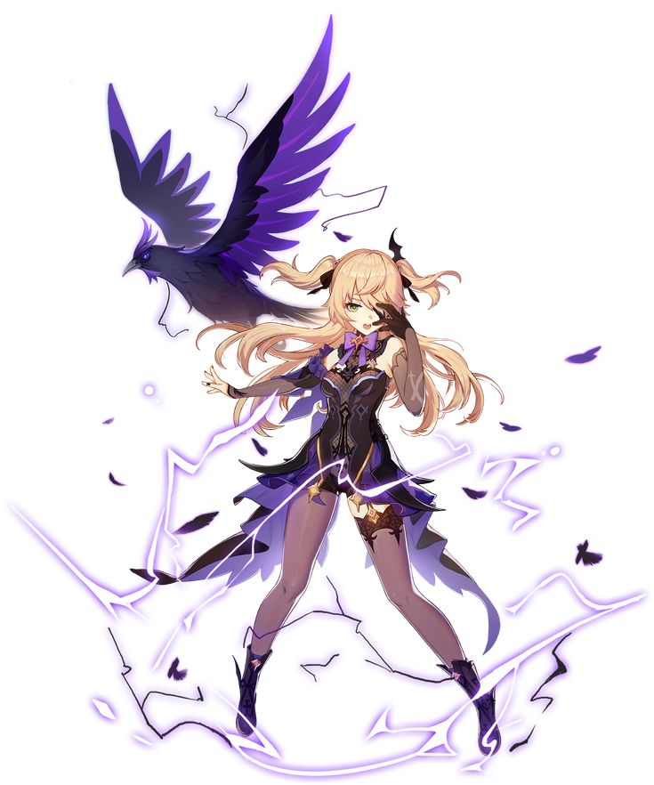
Ela é uma investigadora da Guilda dos Aventureiros de Mondstadt, acompanhada pelo corvo noturno Oz. Uma aventureira ousada com teorias aparentemente extravagantes que por acaso se revelam verdadeiras, ela afirma vir de um mundo além de Teyvat.
Raridade:★★★★ Elemento:Electro Arma:Arco
Sucrose
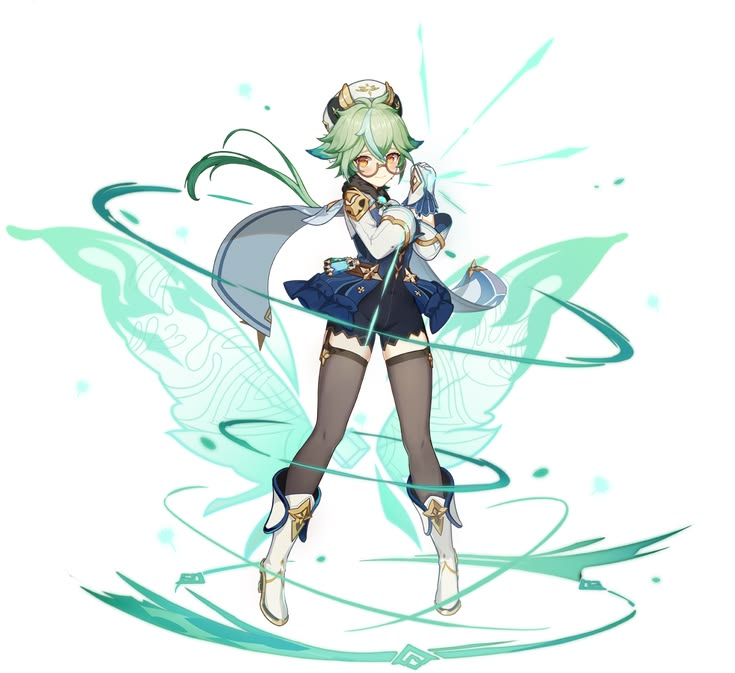
Uma alquimista com uma curiosidade insaciável em relação ao mundo e tudo nele. Ligada aos cavalheiros de Favonius como assistente de Albedo, sua área de foco é a "bio-alquimia". Ela se esforça para enriquecer o mundo, transformando os seres vivos com o poder da alquimia.
Raridade:★★★★ Elemento:Anemo Arma:Catalisador
Mona
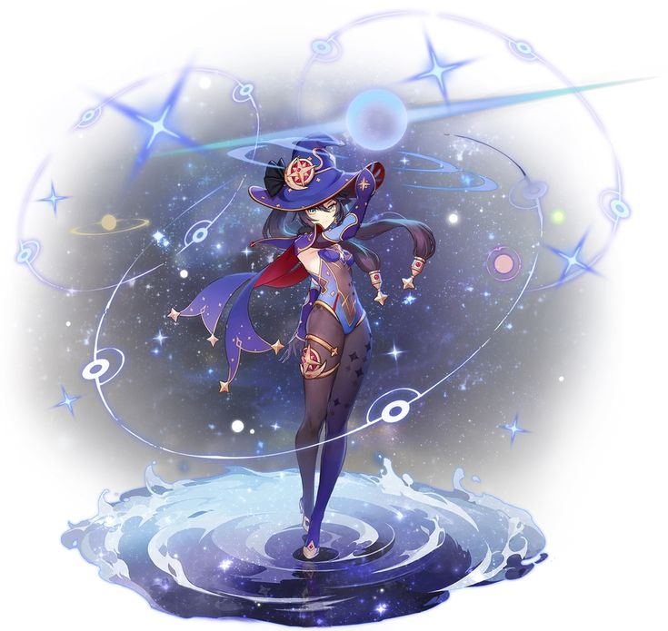
Astróloga de grande conhecimento e orgulho, Mona se estabeleceu em Mondstadt para evitar a ira de seu mestre após ler, sem querer, o diário deste.
Raridade:★★★★★ Elemento:Hydro Arma:Catalisador
Diona
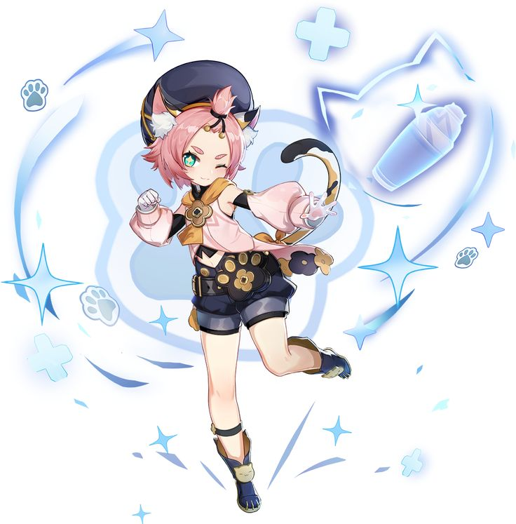
Apesar de ser bartender no Cat's Tail , ela detesta álcool e fará de tudo para arruinar a indústria vinícola de Mondstadt — uma tarefa mais fácil de dizer do que fazer, visto que seus clientes adoram seus drinques. Ela é filha de Draff , um caçador de Springvale.
Raridade:★★★★ Elemento:Cryo Arma:Arco
Albedo
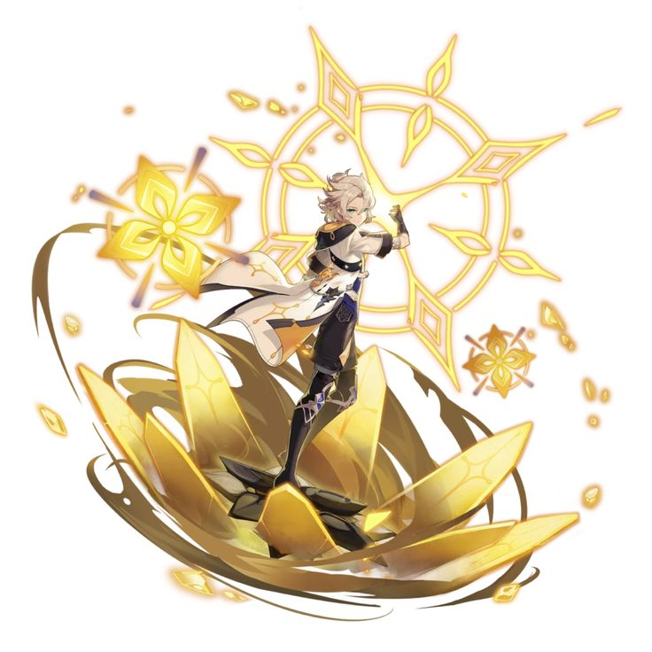
Humano sintético criado pela alquimista Rhinedottir, a misteriosa Albedo é a Alquimista Chefe e Capitã da Equipe de Investigação dos Cavaleiros de Favonius.
Raridade:★★★★★ Elemento:Geo Arma:Espada
Rosaria
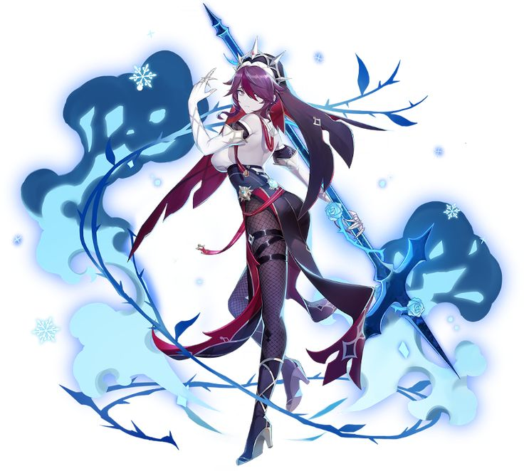
A menos devota entre as freiras da Igreja de Favonius, Rosária prefere agir nas sombras a participar das atividades da Igreja.
Raridade:★★★★ Elemento:Cryo Arma:Lança
Eula
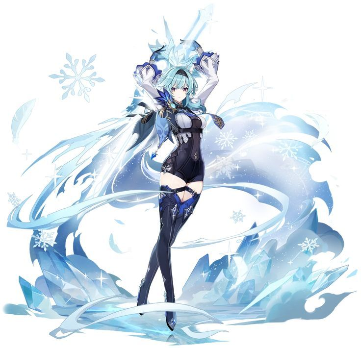
Embora descendente do infame e tirânico Clã Lawrence, Eula rompeu seus laços com o clã e tornou-se capitã da Companhia de Reconhecimento dos Cavaleiros de Favonius.
Raridade:★★★★★ Elemento:Cryo Arma:Espadão
Mika
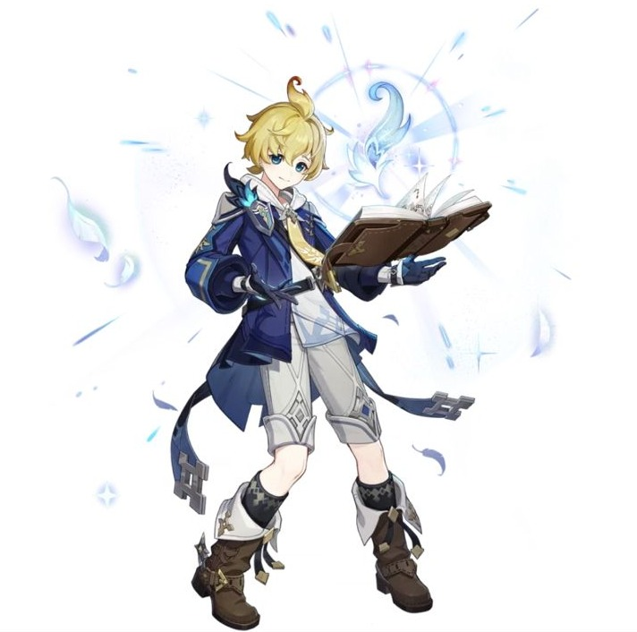
Irmão mais novo de Huffman e topógrafo da linha de frente da Companhia de Reconhecimento dos Cavaleiros de Favonius, liderada por Eula, Mika cumpre diligentemente todas as suas tarefas com eficiência e sonha em se tornar um cartógrafo especialista no futuro.
Raridade:★★★★ Elemento:Cryo Arma:Lança
Dahlia
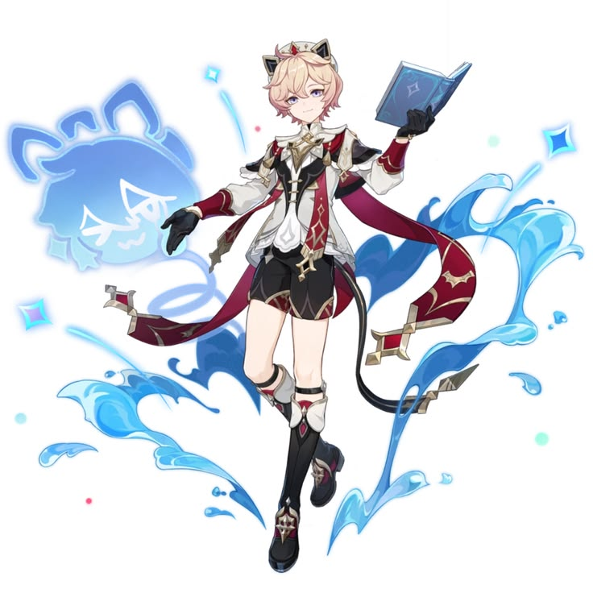
Dahlia é um diácono da Igreja de Favonius . Além disso, ele serve como Arauto de Barbatos e está ciente da identidade de Venti como tal, informando-o sobre quaisquer eventos notáveis na nação e transmitindo seu feedback ao povo de Mondstadt.
Raridade:★★★★ Elemento:Hydro Arma:Espada
Durin
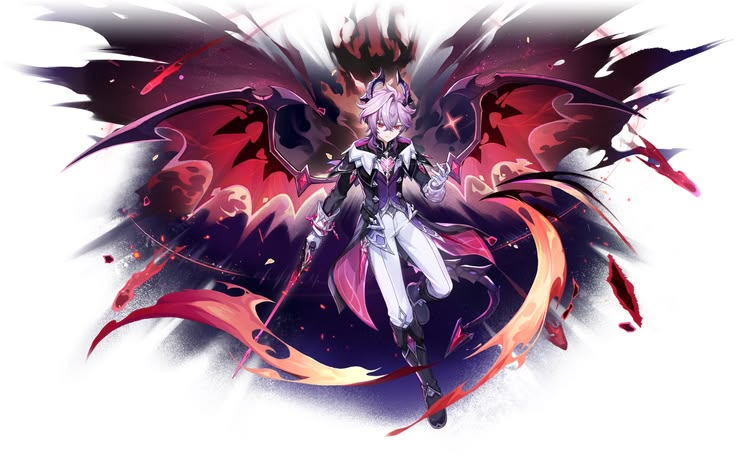
Um dragão criado pela bruxa Hexenzirkel Andersdotter no mundo de conto de fadas de Simulanka , inicialmente comparado ao Durin original numa tentativa de escrever um novo final para a história original. Através da Arte de Khemia, Durin recebeu um corpo humano sintético de Albedo, que ele usou para se integrar à sociedade de Mondstadt.
Raridade:★★★★★ Elemento:Pyro Arma:Espada
Varka
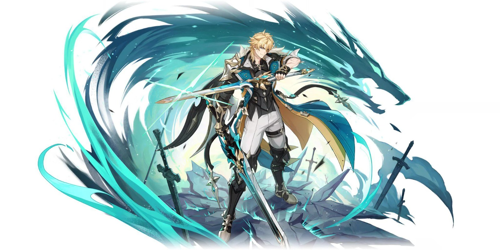
O Grão-Mestre dos Cavaleiros de Favonius e atual Cavaleiro de Boreas, finalmente retornou à sua nação natal, Mondstadt. Alegre e muitas vezes despreocupado, mas ainda assim um líder e cavaleiro incrível.
Raridade:★★★★★ Elemento:Anemo Arma:Espadão
Nicole
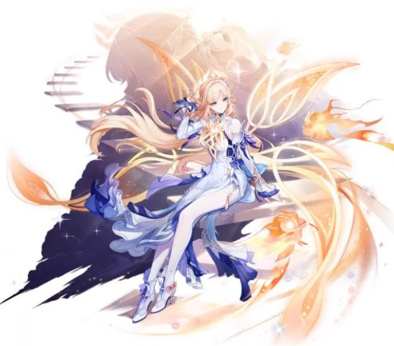
Ela é um anjo sem voz e membro da Hexenzirkel , também conhecida pelo seu codinome "N".
Raridade:★★★★★ Elemento:Pyro Arma:Catalisador
Prune
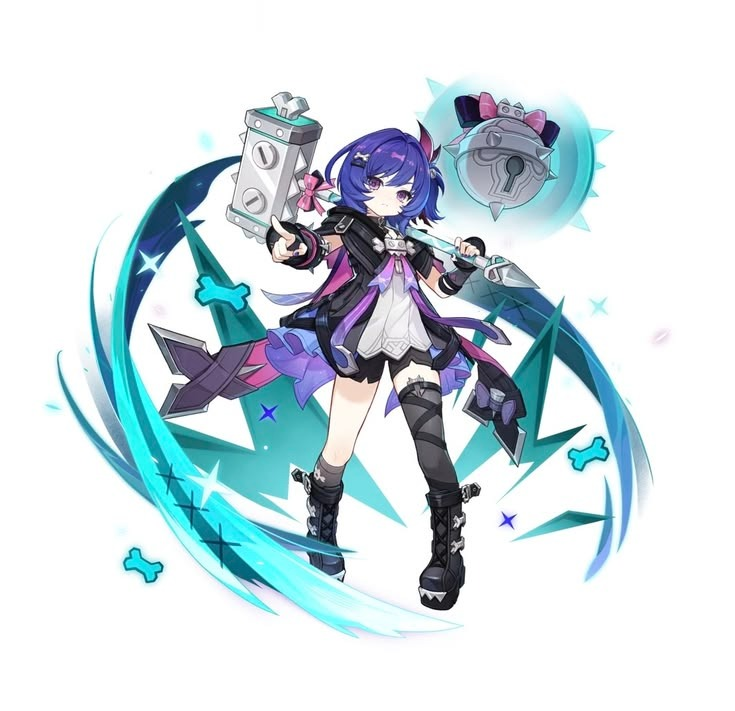
Uma autoproclamada "Caçadora de Bruxas" viajou de Nod-Krai para Mondstadt em busca de Alice, depois que ela "sequestrou" seu amigo imaginário, Descartes. Lá, Prune conhece a filha de Alice, Klee, e espalha cartazes por toda Mondstadt difamando Alice, o que ninguém leva a sério.
Raridade:★★★★ Elemento:Anemo Arma:Catalisador
Lohen
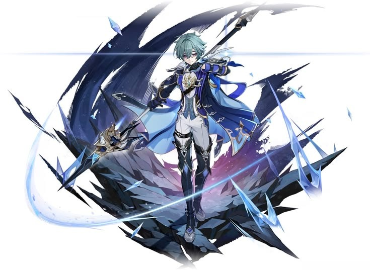
Ele é o vice-capitão da Quinta Companhia dos Cavaleiros de Favonius . Embora não desconheça seus limites, Lohen ama e vive para a batalha, sempre pronto para enfrentar oponentes difíceis que coloquem suas habilidades de luta à prova.
Raridade:★★★★★ Elemento:Cryo Arma:Lança
Liyue
Zhongli
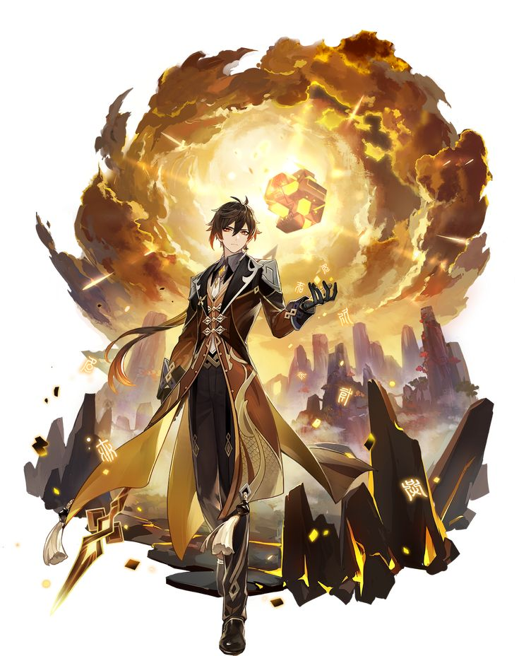
Consultor da Funerária Wangsheng, ele é posteriormente revelado como o Arconte Geo , Morax, que decidiu experimentar o mundo sob a perspectiva de um mortal.
Raridade:★★★★★ Elemento:Geo Arma:Lança
Xiao
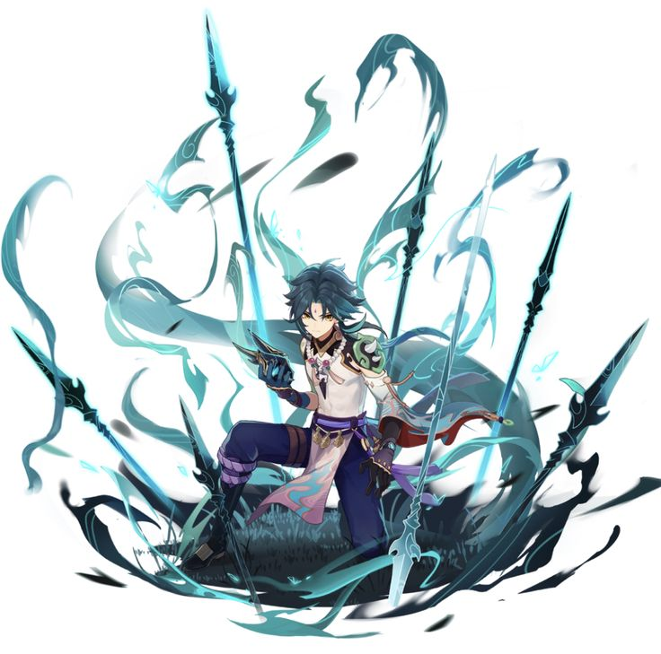
Ele é um adepti , sob o nome de Alatus ( chinês :金鹏 Jīnpéng ), e o único sobrevivente dos cinco principais Yakshas enviados por Morax para subjugar os espíritos demoníacos que assolavam Liyue. Atualmente, reside na Estalagem Wangshu e evita ao máximo grandes multidões e interações sociais.
Raridade:★★★★★ Elemento:Anemo Arma:Lança
Ningguang
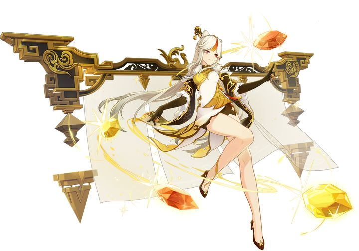
Ningguang , a Tianquan do Liyue Qixing e proprietária da Câmara de Jade flutuante nos céus de Liyue , é uma magnata que abala os próprios alicerces dos círculos empresariais. Mesmo obter alguns fragmentos dos documentos que ela destrói na Câmara de Jade concede um valioso conhecimento de sua sabedoria, o suficiente para se manter um ou dois passos à frente dos seus pares.
Raridade:★★★★ Elemento:Geo Arma:Catalisador
Beidou
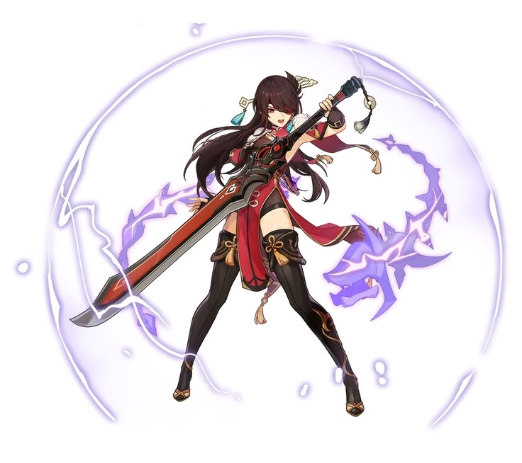
Ela é a capitã do Crux, uma tripulação renomada em Liyue. Além de suas habilidades como capitã de frota e sua imensa força, muitos em Liyue a conhecem por sua coragem em relação ao Tianquan do Liyue Qixing, Ningguang — uma característica que os outros apreciam, mas que também os irrita.
Raridade:★★★★ Elemento:Electro Arma:Espadão
Xiangling
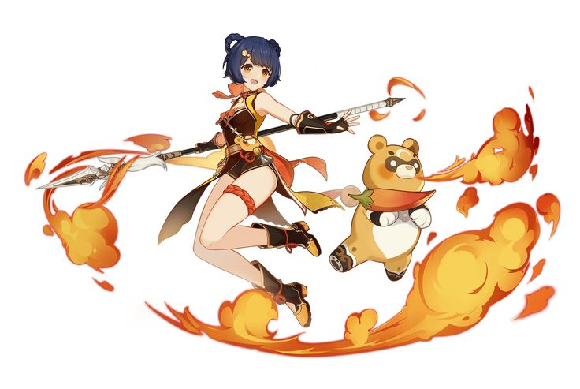
Ela é a chefe de cozinha do restaurante Wanmin e o administra ao lado de seu pai, o chef Mao . Como chef, Xiangling não tem medo de experimentar receitas diferentes ou ingredientes "exóticos", tornando seus pratos, por vezes, bastante singulares.
Raridade:★★★★ Elemento:Pyro Arma:Lança
Xingqiu
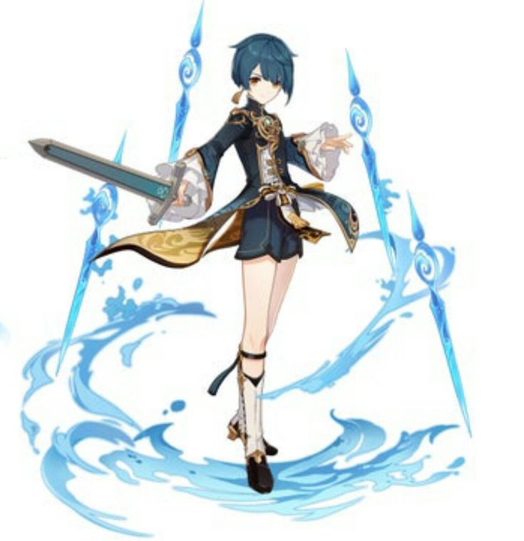
Ele é o segundo filho do gerente da Guilda de Comércio Feiyun , um grupo influente em Liyue , e também se autoproclama praticante das artes do Clã Guhua . Além disso, é um ávido leitor e almeja ser a personificação da cavalaria, como os heróis dos livros que lê; contudo, isso esconde sua propensão para travessuras.
Raridade:★★★★ Elemento:Hydro Arma:Espada
Chongyun
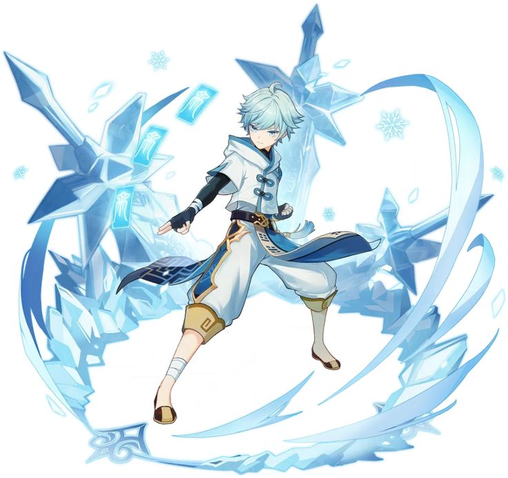
Nascido com um excesso de energia yang (positiva), Chongyun tornou-se um exorcista extremamente eficaz em Liyue — tão eficaz que ele próprio nunca viu um espírito, pois eles fogem imediatamente quando ele se aproxima. Esse excesso de energia yang também o torna particularmente suscetível ao calor e a emoções fortes, o que levou a alguns resultados bastante inesperados.
Raridade:★★★★ Elemento:Cryo Arma:Espadão
Qiqi
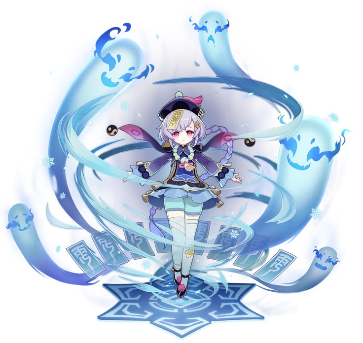
Ressuscitada como zumbi pelos adeptos, ela acabou sob os cuidados de Baizhu e agora trabalha na Farmácia Bubu, no Porto de Liyue.
De acordo com Zibai, Qiqi teve seus Três Eus Mortais separados, mas, ao contrário de um processo completo, apenas um eu danificado e incompleto permanece em seu corpo. Este fragmento provavelmente foi quebrado e posteriormente remontado por meio de magia adeptal, enquanto os outros estão perdidos. O sigilo em sua testa estabiliza o que restou de sua alma, mantendo-a viva, mas deixando-a com graves problemas de memória devido ao seu estado incompleto.
Raridade:★★★★★ Elemento:Cryo Arma:Espada
Keqing
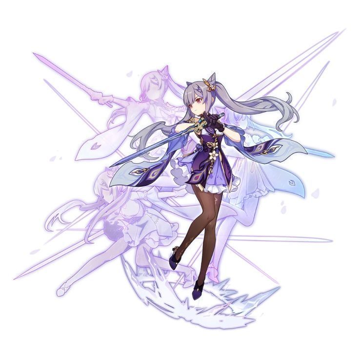
Como Yuheng do Liyue Qixing, ela é alguém que busca suas próprias respostas em vez de deixar o caos reinar em Liyue . Ela escolhe seu próprio caminho com seu próprio poder e habilidade, em vez de deixar que os deuses determinem seu destino.
Raridade:★★★★★ Elemento:Electro Arma:Espada
Xinyan
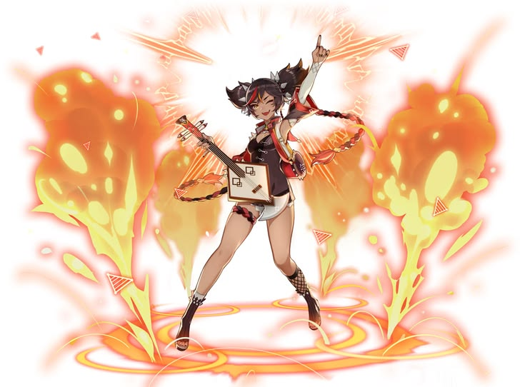
O rock 'n' roll é um estilo musical relativamente impopular em Liyue , tendo sido trazido recentemente de Fontaine . Xinyan, no entanto, adora o som — e está lenta mas seguramente conquistando sua própria base de fãs enquanto se apresenta por todo o Porto de Liyue.
Raridade:★★★★ Elemento:Pyro Arma:Espadão
Ganyu
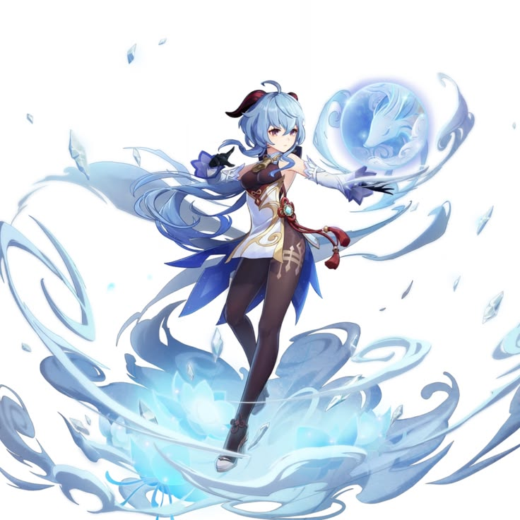
Ela é uma adepti meio -qilin sob contrato com o Arconte Geo Morax e serve como secretária-geral do Liyue Qixing. Devido à sua origem adepta, ela se sente distante do mundo humano.
Raridade:★★★★★ Elemento:Cryo Arma:Arco
Hutao
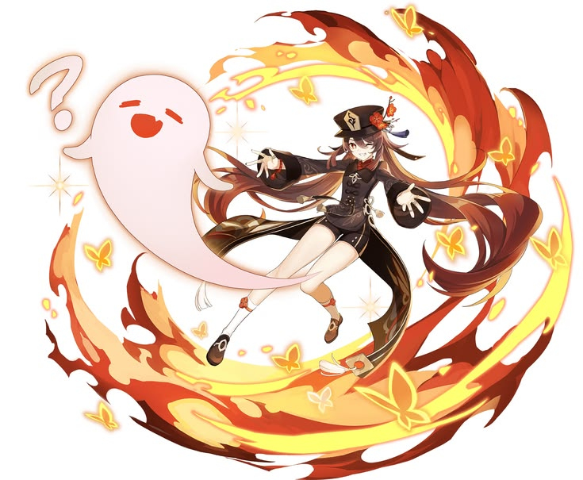
As extravagâncias e excentricidades de Hu Tao contradizem seu papel como a 77ª Diretora da Funerária Wangsheng e seu talento como poetisa. Mesmo assim, ela trata as operações da funerária com a máxima importância e realiza cerimônias fúnebres com a maior dignidade e solenidade.
Raridade:★★★★★ Elemento:Pyro Arma:Lança
Yanfei
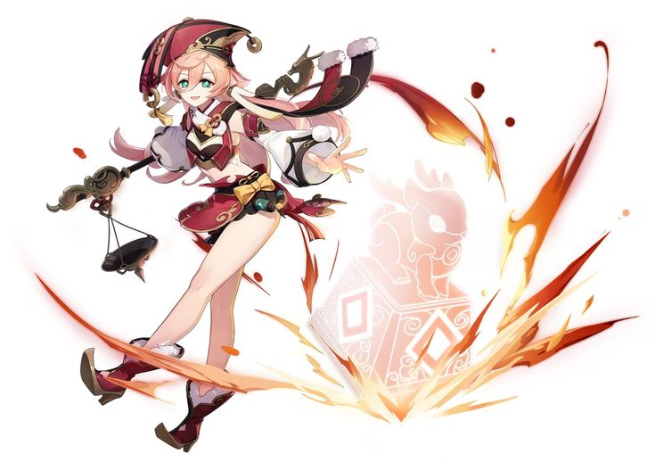
Uma das poucas criaturas semi-iluminadas que não assinaram contrato com Rex Lapis , Yanfei trabalha, no entanto, para o bem de Liyue como uma consultora jurídica de primeira linha que preza pela justiça.
Raridade:★★★★ Elemento:Pyro Arma:Catalisador
Shenhe
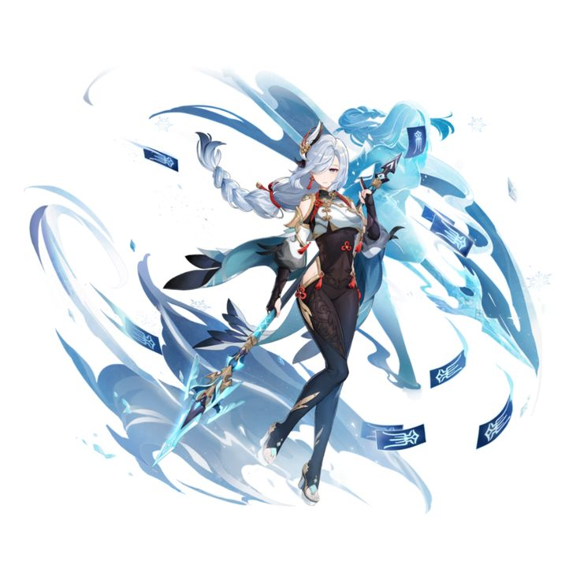
Filha de um casal de exorcistas não identificado, Shenhe foi acolhida e criada por Cloud Retainer como discípula após um incidente traumático instigado por seu pai durante sua infância.
Raridade:★★★★★ Elemento:Cryo Arma:Lança
Yunjin
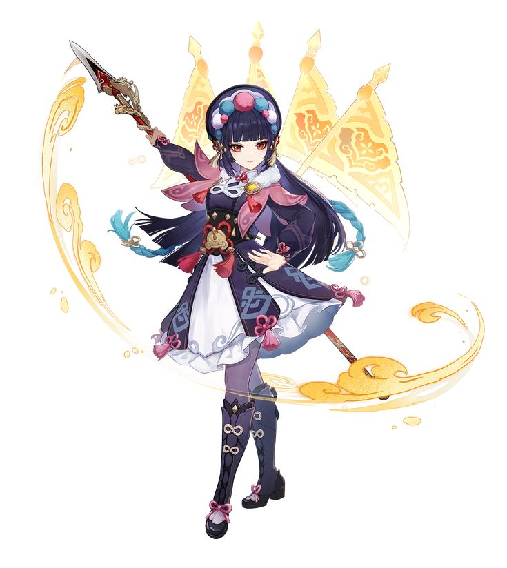
Figura célebre no cenário operístico do Porto de Liyue , Yun Jin é diretora da Companhia de Ópera Yun-Han e se apresenta ocasionalmente na Casa de Chá Heyu . Ela também é dramaturga, tendo escrito todas as peças encenadas pela Companhia de Ópera Yun-Han nos últimos anos, incluindo um novo final para "A Divina Donzela da Devastação".
Raridade:★★★★ Elemento:Geo Arma:Lança
Yelan
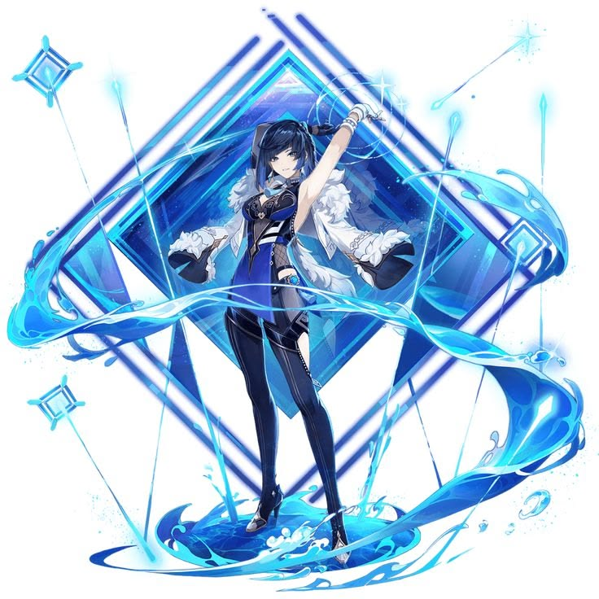
Ela é uma pessoa misteriosa que alega trabalhar para o Ministério de Assuntos Civis , mas não consta na lista de funcionários. Ela também afirma trabalhar para a Casa de Chá Yanshang , mas só a utiliza para seu verdadeiro trabalho: agente de inteligência que colabora com Ningguang.
Raridade:★★★★★ Elemento:Hydro Arma:Arco
Yaoyao
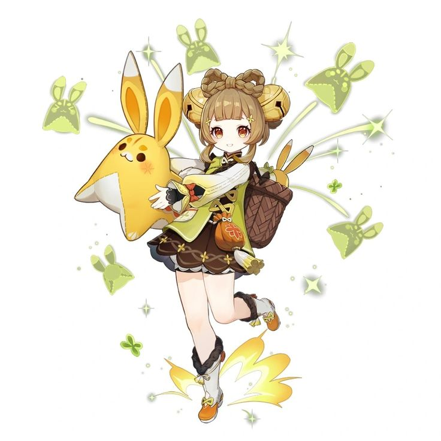
Originária de uma área rural não muito longe da Vila Qingce , Yaoyao cresceu em contato com a natureza. Vendo potencial em Yaoyao, a Andarilha das Ruas a acolheu como sua discípula, e Yaoyao deixou as montanhas tranquilas para viver com sua mestra no vibrante e movimentado Porto de Liyue.
Raridade:★★★★ Elemento:Dendro Arma:Lança
Baizhu
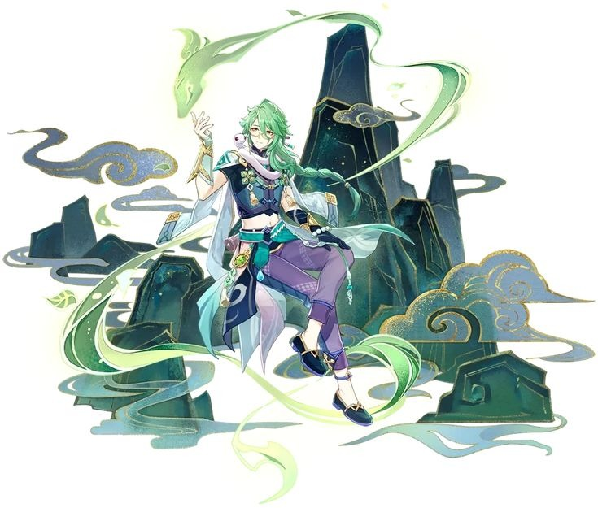
O Dr. Baizhu, dono da Farmácia Bubu e guardião de Qiqi , é um mestre das artes medicinais e o mais recente a receber um contrato geracional com uma cobra branca chamada Changsheng . Ele busca alcançar a imortalidade para garantir que seja o último a arcar com seu contrato, poupando potenciais herdeiros e até mesmo a própria Changsheng do preço que acompanha seu poder.
Raridade:★★★★★ Elemento:Dendro Arma:Catalisador